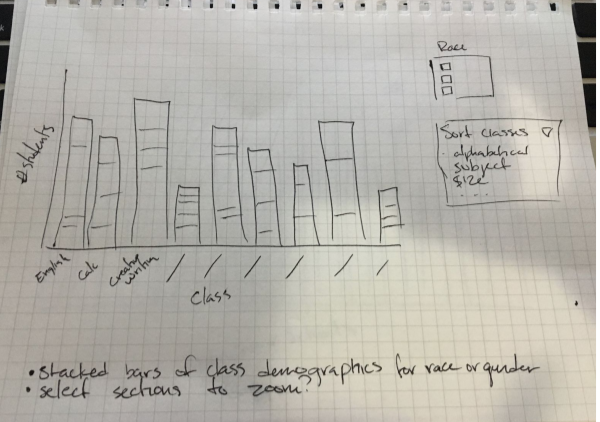
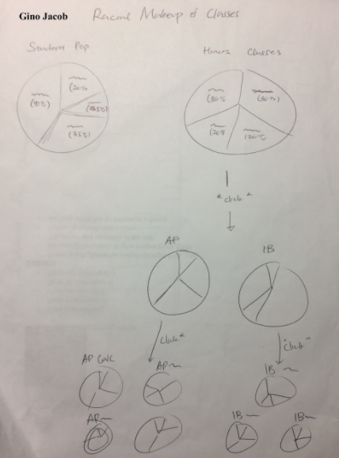
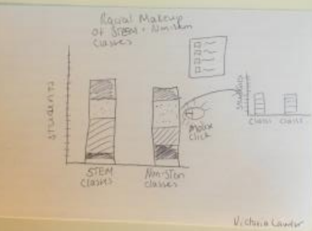

Boston Public School Data Visualization
Victoria Lawlor, Ryan Perny, Gino Jacob
Motivation
We partnered with Boston Public Schools (BPS), specifically Boston Latin Academy, a college preparatory public high school. We were asked to provide visualizations detailing the gender and racial makeup of classes. Boston Latin Academy was specifically interested in how these factors differed in AP/Honors classes vs. regular classes, and by class category (STEM, language, arts, humanities). This project is a smaller part of a larger initiative by BPS to analyze and visualize data on factors predicting student success and graduation.
Data
We were provided with data from each class of interest. The data was provided as a google spreadsheet, with each class as its own sheet. Each class consisted of a unique row for each student that contained their race, gender, and year of graduation. Data from each class were aggregated and each class was given a category (STEM, language, arts, humanities) and status of AP/Honors or regular.
Task Analysis
Our first interview with Ingrid, our Boston Latin Academy contact, was a skype call in which she described what she wanted us to do for the project, told us about the data, and informed us of the larger BPS project to analyze the large amounts of data that are available on factors predicting student success and graduation. Based on this interaction, we identified the following questions as most pertinent to the project:
- What is the gender makeup for those enrolled in AP/honors classes? Does this differ from regular classes?
- What is the racial makeup for those enrolled in AP/honors classes? Does this differ from regular classes?
- What is the gender makeup of STEM classes vs. other subjects?
- What is the racial makeup of STEM classes vs. other subjects?
Our analytic task was thus to summarize, our search task was to locate, and our high-level task was to discover.
Design Process
Our final project was the culmination of these initial sketches, which used stacked bar charts and pie charts to encode the gender and racial makeup of classes.
  Final Visualization
Racial Makeup of Boston Latin Academy Courses
Racial Makeup of Academic Categories
Gender Makeup of Boston Latin Academy Courses
Gender Makeup of Academic Categories
Data Analysis
There were more girls than boys in the classes that we examined, though this could be because girls took a higher number of classes. A greater proportion of girls took AP/Honors classes than regular classes. Girls were also overrepresented in the humanities and STEM classes. The racial makeup of classes appears evenly split between White, Hispanic, Asian, and Black students, with no obvious differences between class types or categories.
Conclusion
Our visualizations show the gender and racial makeup of classes at the Boston Latin Academy. Future work should identify which factors are unique to Boston Latin Academy and which are common across all Boston high schools.